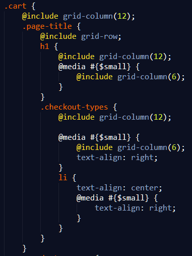
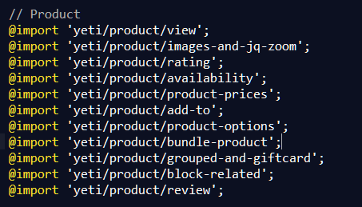
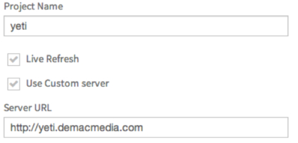
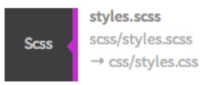

Methodology
“Sass is a meta-language on top of CSS that’s used to describe the style of a document cleanly and structurally, with more power than flat CSS allows. Sass both provides a simpler, more elegant syntax for CSS and implements various features that are useful for creating manageable stylesheets.”
1) Sass with *.sass files - Older syntax requiring indentation rather than { } brackets
2) SCSS = Sassy CSS, file extensions are *.scss files - most widely used syntax and CSS3 works with it by default.
Sass - CSS with superpowers - Official Site
Nesting is by far the biggest benefit. Allowing for your CSS to have more of a DRY approach, and simply being able to see which element is a child very visually without side scrolling or jumping around the page.
Example: Shopping Cart

We already put in comments in CSS to visually provide a break between sections of code; so why not take it a step further and put those sections into their own partials?
This uses the @import syntax, and this is where file heirarchy comes into play. Top-level files that import other files would be "styles.scss"
Whereas the files that are imported are denoted by an underscore, such as "_header.scss", or "_nav-menu.scss"
Example: Product page partials

FREE Compiler for SCSS to CSS compilations.
Also minifies js and other files.
Watches file changes to auto compile on save
A Chrome extension for Prepros allows Prepros to refresh changes on compile directly to Chrome.
Click on the for project settings
Check Live Refresh if it isn't checked off already. Click on "Use Custom Server" to specify a domain.

Note: Include "http://". It's good practice!
After installing Prepros, it is a good idea to turn off auto compile on any files other than scss files. Javascript files force the browser to refresh each page that matches the live refresh domain and can be a bit of a nuisance.
Settings can be found at the top right corner of Prepros. Select each language and de-select "auto compile".
Add a project by dragging it into Prepros.
For Magento installations, drag its skin folder.
E.g. /skin/frontend/your-package/your-theme
Prepros is now setup to auto-compile all scss files upon auto-saving.
Ensure your styles are being compiled to the css folder by doublechecking the directory

Collection of mixins. Not absolutely necessary, but you'll find there are things you'll need over and again.
Great for ensuring CSS3 styles are cross browser compliant without writing all the extra code.
Ensure CSS3 usage is up to date along with Compass library.
Prepros comes with the compass library.
Use Compass by adding:
@import "compass";
Compass mixins are used like any regular mixin.
For example, to use the border-radius mixin:
@import border-radius(4px, 4px);
would output:
-webkit-border-radius: 4px 4px;
-moz-border-radius: 4px / 4px;
-khtml-border-radius: 4px / 4px;
border-radius: 4px / 4px;
An entire list of mixins and functions can be found at:
http://compass-style.org/reference/compass/
You know what functions are.
@function calc-percent($target, $container) {
@return ($target / $container) * 100%;
}
@function emCalc($pxWidth) {
@return $pxWidth / $em-base * 1em;
}
You know what variables are.
$primary-colour: #F00;
But what are mixins? Well... they are everything O_O
@mixin sprite {
background: url('../images/sprite.png');
}
.arrow {
@include sprite;
background-position: -90px -150px;
}
A front-end library with a large collection of styles, mixins, functions, and variables
Very easy to change the default variables in scss
Built-in styling for standard class names
Scss mixins and functions for more custom features
Grid Rows & Grid Columns are functions built into Foundation's scss library
Both can be included as mixins to add structure to page layouts
Use @include grid-row; on the parent class
Use @include grid-columns($columns); on the child class
Can be nested inside scss selectors
References to screen widths can be stored as variables
Inside of desired scss selector:
@media #{$smaller} {}
Scss is cleanest this way
Design page for mobile view and use queries to change content as window expands
No screen maximum so will not break on larger displays
Mobile users will not have to get heavy desktop assets
Sass - CSS with superpowers - Official Site
Compass - open-source CSS authoring framework
Reduce the Complexity of Responsive Web Design Using SCSS - by Kyle, Nov 28, 2013
Reduce the Complexity of Responsive Web Design Using SCSS - by Kyle, Nov 28, 2013